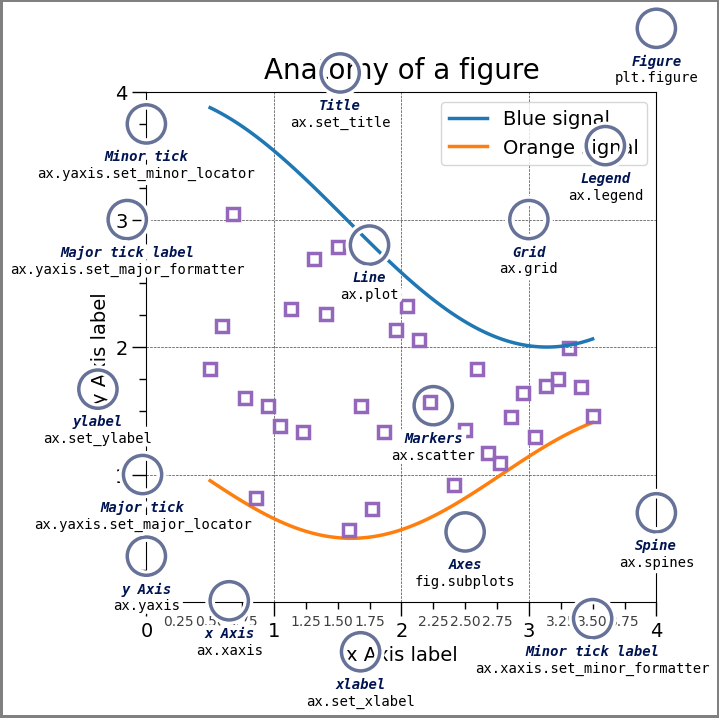

import matplotlib.pyplot as plt
import numpy as np
from matplotlib.patches import Circle
from matplotlib.patheffects import withStroke
from matplotlib.ticker import AutoMinorLocator, MultipleLocator
royal_blue = [0, 20/256, 82/256]
# make the figure
np.random.seed(19680801)
X = np.linspace(0.5, 3.5, 100)
Y1 = 3+np.cos(X)
Y2 = 1+np.cos(1+X/0.75)/2
Y3 = np.random.uniform(Y1, Y2, len(X))
fig = plt.figure(figsize=(7.5, 7.5))
ax = fig.add_axes([0.2, 0.17, 0.68, 0.7], aspect=1)
ax.xaxis.set_major_locator(MultipleLocator(1.000))
ax.xaxis.set_minor_locator(AutoMinorLocator(4))
ax.yaxis.set_major_locator(MultipleLocator(1.000))
ax.yaxis.set_minor_locator(AutoMinorLocator(4))
ax.xaxis.set_minor_formatter("{x:.2f}")
ax.set_xlim(0, 4)
ax.set_ylim(0, 4)
ax.tick_params(which='major', width=1.0, length=10, labelsize=14)
ax.tick_params(which='minor', width=1.0, length=5, labelsize=10,
labelcolor='0.25')
ax.grid(linestyle="--", linewidth=0.5, color='.25', zorder=-10)
ax.plot(X, Y1, c='C0', lw=2.5, label="Blue signal", zorder=10)
ax.plot(X, Y2, c='C1', lw=2.5, label="Orange signal")
ax.plot(X[::3], Y3[::3], linewidth=0, markersize=9,
marker='s', markerfacecolor='none', markeredgecolor='C4',
markeredgewidth=2.5)
ax.set_title("Anatomy of a figure", fontsize=20, verticalalignment='bottom')
ax.set_xlabel("x Axis label", fontsize=14)
ax.set_ylabel("y Axis label", fontsize=14)
ax.legend(loc="upper right", fontsize=14)
# Annotate the figure
def annotate(x, y, text, code):
# Circle marker
c = Circle((x, y), radius=0.15, clip_on=False, zorder=10, linewidth=2.5,
edgecolor=royal_blue + [0.6], facecolor='none',
path_effects=[withStroke(linewidth=7, foreground='white')])
ax.add_artist(c)
# use path_effects as a background for the texts
# draw the path_effects and the colored text separately so that the
# path_effects cannot clip other texts
for path_effects in [[withStroke(linewidth=7, foreground='white')], []]:
color = 'white' if path_effects else royal_blue
ax.text(x, y-0.2, text, zorder=100,
ha='center', va='top', weight='bold', color=color,
style='italic', fontfamily='monospace',
path_effects=path_effects)
color = 'white' if path_effects else 'black'
ax.text(x, y-0.33, code, zorder=100,
ha='center', va='top', weight='normal', color=color,
fontfamily='monospace', fontsize='medium',
path_effects=path_effects)
annotate(3.5, -0.13, "Minor tick label", "ax.xaxis.set_minor_formatter")
annotate(-0.03, 1.0, "Major tick", "ax.yaxis.set_major_locator")
annotate(0.00, 3.75, "Minor tick", "ax.yaxis.set_minor_locator")
annotate(-0.15, 3.00, "Major tick label", "ax.yaxis.set_major_formatter")
annotate(1.68, -0.39, "xlabel", "ax.set_xlabel")
annotate(-0.38, 1.67, "ylabel", "ax.set_ylabel")
annotate(1.52, 4.15, "Title", "ax.set_title")
annotate(1.75, 2.80, "Line", "ax.plot")
annotate(2.25, 1.54, "Markers", "ax.scatter")
annotate(3.00, 3.00, "Grid", "ax.grid")
annotate(3.60, 3.58, "Legend", "ax.legend")
annotate(2.5, 0.55, "Axes", "fig.subplots")
annotate(4, 4.5, "Figure", "plt.figure")
annotate(0.65, 0.01, "x Axis", "ax.xaxis")
annotate(0, 0.36, "y Axis", "ax.yaxis")
annotate(4.0, 0.7, "Spine", "ax.spines")
# frame around figure
fig.patch.set(linewidth=4, edgecolor='0.5')
plt.show()